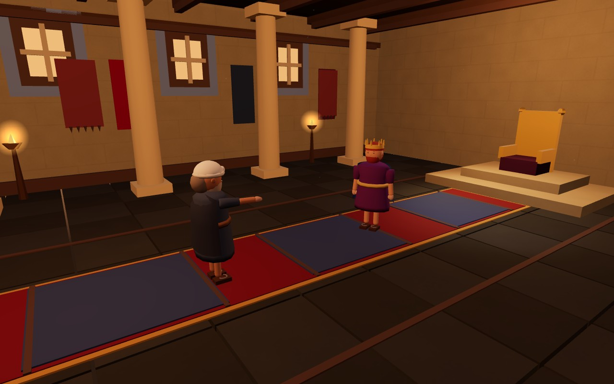
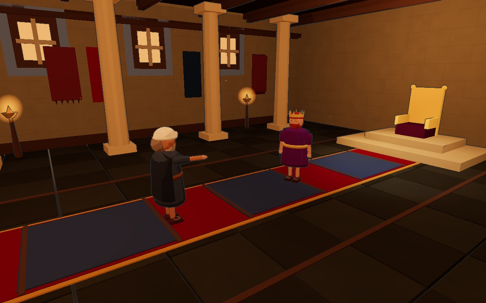
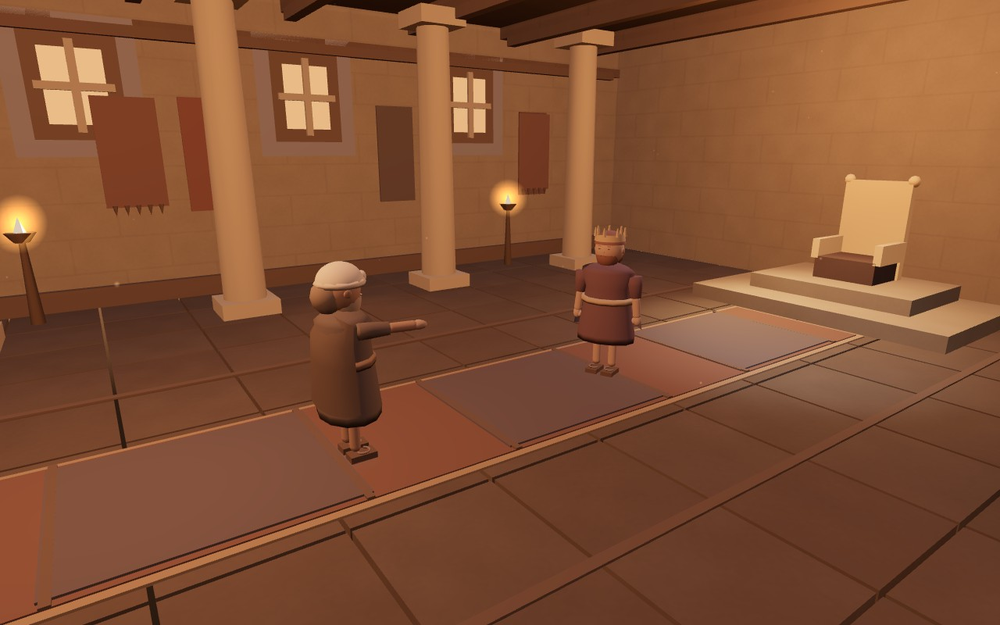
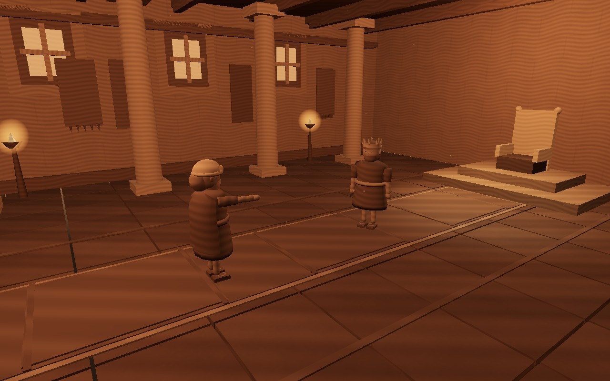
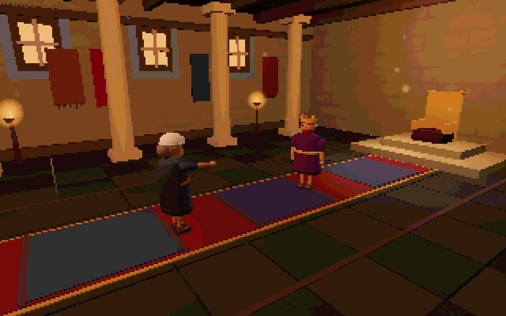
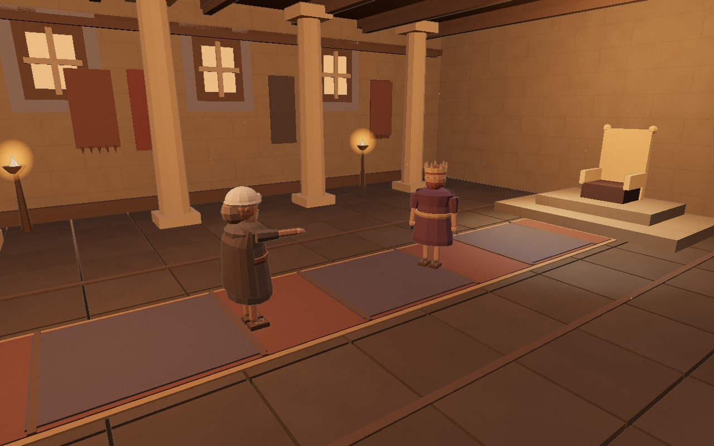
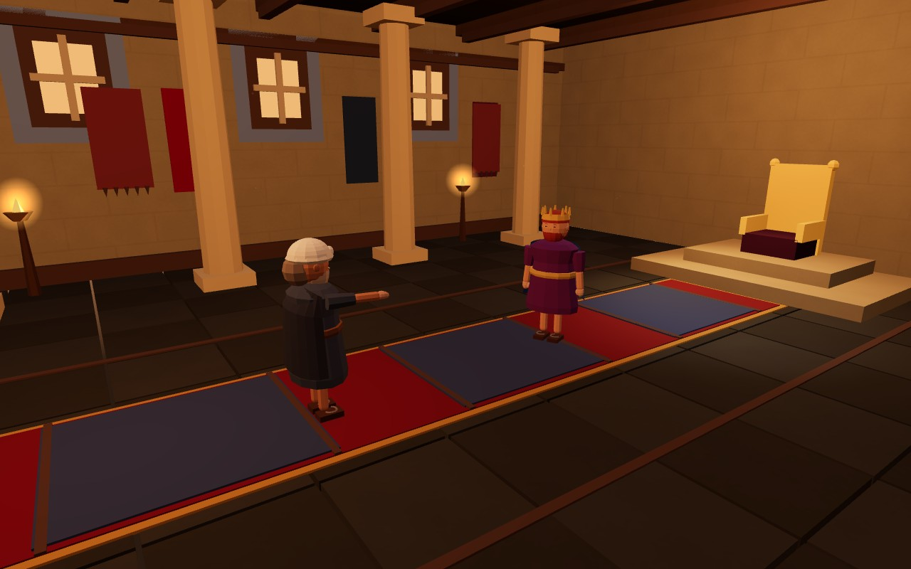
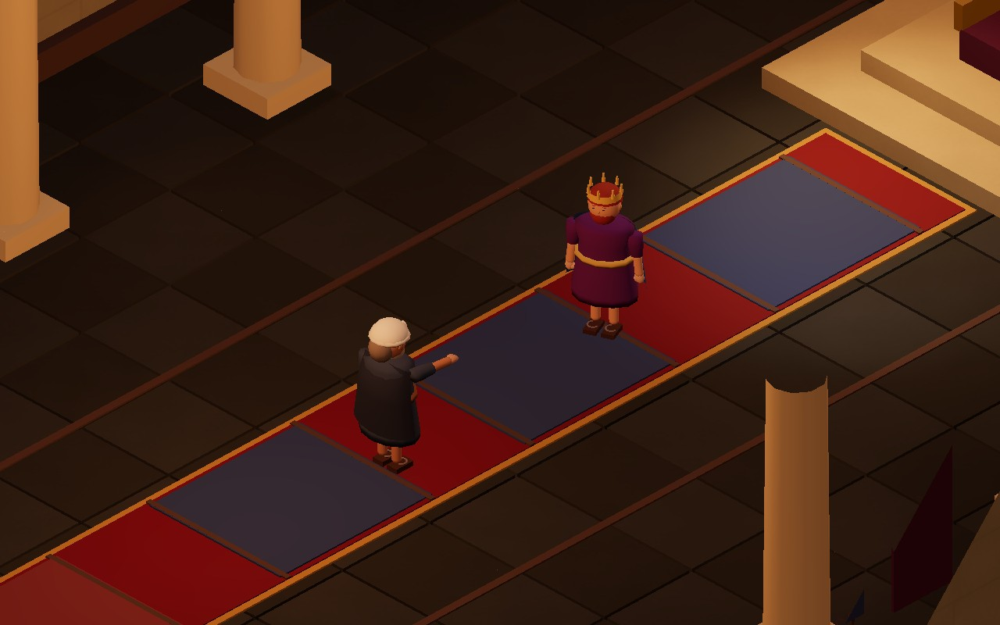
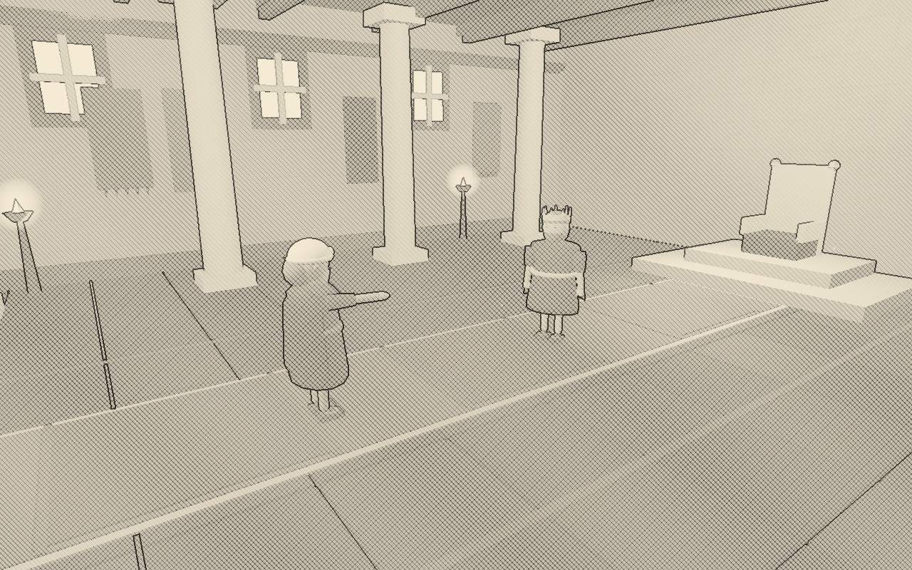

아래는 모두 현재 게임의 WebGL 화면을 직접 캡처한 이미지입니다.같은 모델·포즈·장면을 기준으로 재질과 렌더링을 바꿨습니다. 09번만 직교 카메라·상부 절단을 사용합니다. 생성형 원화나 미구현 목표 이미지는 없습니다.

현재 조형과 재질을 유지하는 비교 기준.
실제 3단계 툰 재질. 모델과 표정은 동일.

셀 셰이딩에 깊이·색 경계 윤곽선을 추가.

저채도 무광 점토 표면. 새로운 점토 모델은 아님.

실제 모델 위에 절차적 나뭇결과 갈색 명암 적용.

가로·세로 1/4 해상도로 렌더하고 최근접 확대. 2D 픽셀 원화는 아님.

밝은 종이색과 섬유 질감, 옅은 윤곽선. 종이 절개 모델은 아님.

면 단위 명암을 강조. 실제 폴리곤 수는 줄이지 않음.

직교 투영과 높은 시점, 실내 상부 절단. 게임 전체 카메라로의 채택은 별도 검증 필요.

단색 명암·교차 해칭·윤곽선을 실제 렌더에 적용.